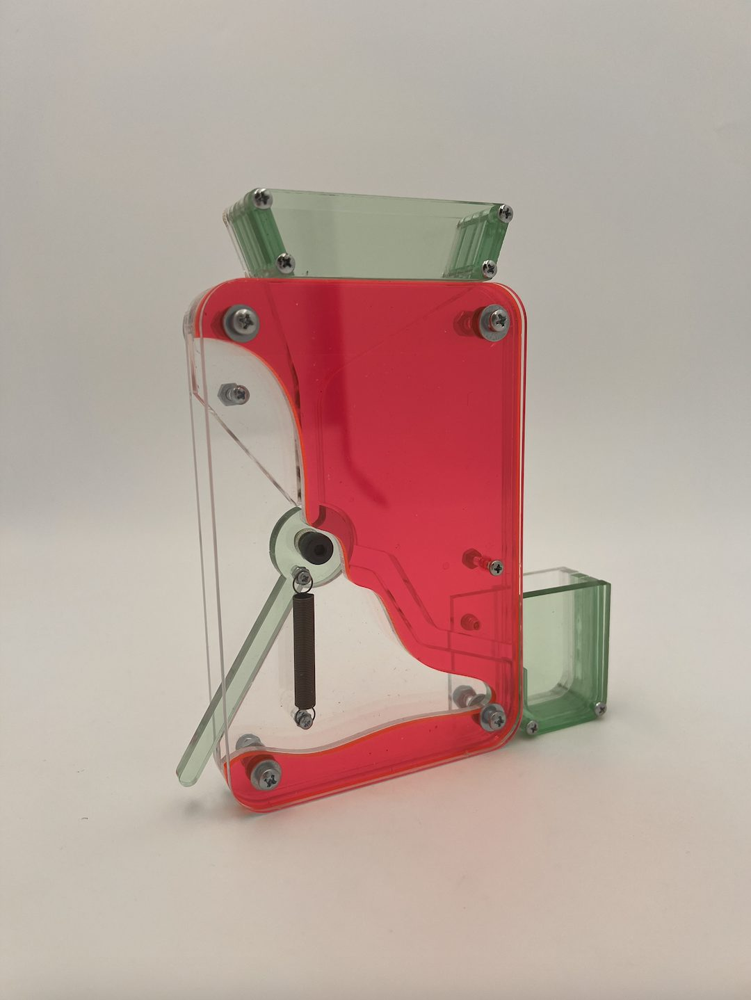
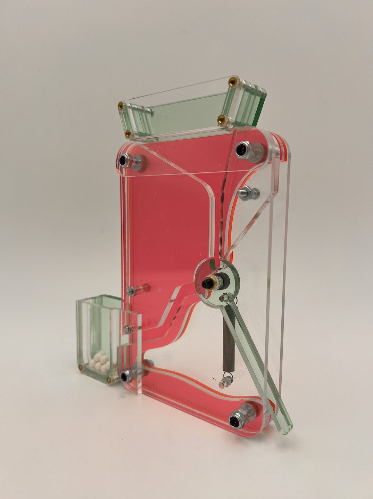
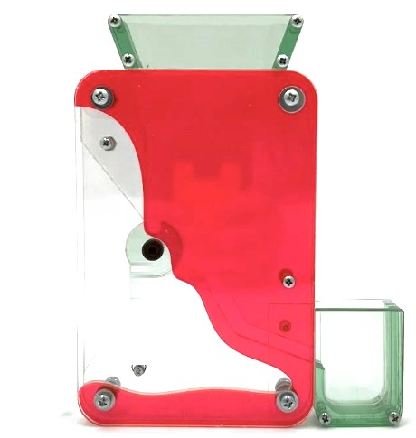
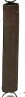
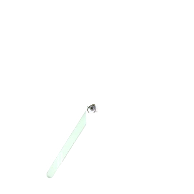

Candy Dispenser
Focus on the journey. Not the destination.
Inspired by my childhood memories of watching candy fall through colorful gum-ball machines, I chose to make my dispenser completely out of see-through acrylic and organic shapes. To use, simply load your candy through the top funnel, push the lever up, and watch your candy sliiiide to its destination. Born out of joy, memory, and nostalgia, this candy dispenser is all about enjoying the journey (almost) as much as the destination.
the demo — watch it sliiiide





Take your sweet time learning about the process.
Project detailsFabricate a free-standing candy dispenser without adhesive that can be actuated with one hand.
Prototyping
A foam core prototype was built to confirm the design idea would work and to surface any considerations that could make or break it.
CAD
A hi-fidelity CAD model was created to check how all of the parts would fit together. Materials and colors were then tested to find the most fun effect in real-time use. Translucent, vibrant colors were chosen so users can enjoy the satisfaction of watching their candy fall to its final destination.
Assembly
All pieces were laser cut from the CAD files and preliminarily assembled to confirm the dispenser looked as intended.
Finishing Touches
The dispenser was assembled using heat inserts, hex nuts, and a linear loaded spring. Testing involved loading candies into the top funnel and turning the green lever to dispense them into the bottom bucket.